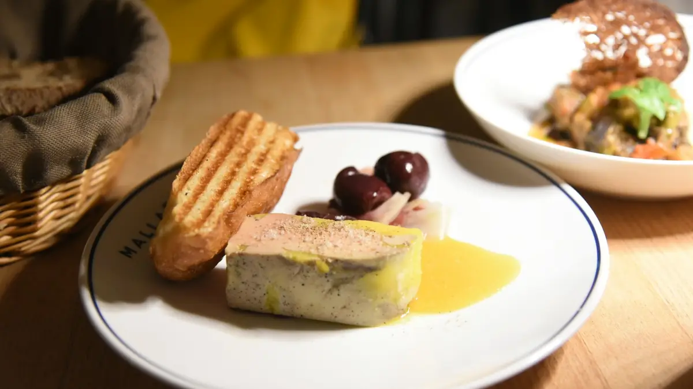

Home › Wine stories › Sauternes and Foie Gras: The Golden Pairing of the French Réveillon
Sauternes and Foie Gras: The Golden Pairing of the French Réveillon

Photo: Luna Wang on Unsplash
Why a slice of foie gras and a chilled glass of Sauternes became the classic opening act of a French Christmas Eve feast, and what the history really says.
Ask a French family what opens their Christmas Eve feast and many will name the same two things: a slice of foie gras on toasted bread and a small glass of golden, chilled Sauternes. It is one of the great set pieces of the festive table, yet the story behind it is younger, and more interesting, than most people assume.
The meal itself is the réveillon, from the verb réveiller, to wake. In the Middle Ages the faithful ate a lean, meatless supper before midnight mass and only feasted once they came home in the small hours. Today far fewer French people go to mass, but the name stuck to the long, multi-course dinner of 24 December, and to its New Year's Eve twin, the réveillon de la Saint-Sylvestre.
Fattened liver is ancient. Reliefs in Egyptian tombs at Saqqara, more than 4,500 years old, show geese being force-fed, and Roman writers describe livers swollen on figs. After Rome fell, Jewish communities in central Europe kept the craft alive, using goose fat where others cooked with butter or lard, and it spread to Alsace. Strasbourg became its great centre; the tale that a cook called Jean-Pierre Clause invented the foie gras pâté there around 1780 is best treated as legend. Today most production is in south-west France.
What surprises many is how recently it became a Christmas dish. According to food historian Loïc Bienassis of the University of Tours, foie gras charmed Parisian elites from the 18th century but only became a standard Christmas product in the late 1970s, as mass production made it affordable. Now around 80 per cent of French household purchases fall between November and January, according to FranceAgriMer figures for 2021.
Its classic partner comes from the left bank of the Garonne, about 40 kilometres south-east of Bordeaux. In the five communes of Sauternes, Barsac, Bommes, Fargues and Preignac, the cold waters of the little Ciron river meet the warmer Garonne and breed autumn mists. Those mists encourage Botrytis cinerea, the noble rot that shrivels Sémillon, Sauvignon Blanc and Muscadelle grapes and concentrates their sugar. Pickers pass through the vines several times, taking only the ripest berries, and yields are capped at just 25 hectolitres per hectare. The 1855 classification placed Château d'Yquem alone in a rank above everyone else, with 11 first growths and 15 second growths below it, and Thomas Jefferson rated Sauternes the best white wine in France after Champagne and Hermitage.
Why does it work? The wine's sweetness echoes the gentle richness of the liver, while its bright acidity cleans the palate between mouthfuls, and its notes of apricot, honey and candied orange behave like the fruit chutneys often served alongside. A whole dinner of sweet wine would be too much, so the Sauternes is usually poured for the starter alone, sometimes returning with the cheese.
If you want to bring the réveillon home this festive season, serve the wine well chilled, around 8 to 10°C, in small glasses. A half bottle of Sauternes or Barsac from a good recent vintage is plenty for four. For something lighter, try a neighbouring Loupiac or Cadillac, a Monbazillac from Bergerac, a Jurançon from the Pyrenees or an Alsace late-harvest Gewurztraminer. And for anyone avoiding foie gras, the same bottle is glorious with a smooth chicken liver parfait or a wedge of Roquefort.
Sources
- Why do we eat foie gras at Christmas? – Gault&Millau
- Dinde, foie gras, huîtres, bûche : pourquoi en mange-t-on à Noël ? – Aleteia
- Foie gras, a favourite for the festive season – SIAL Paris
- Sauternes and Barsac – Decanter
- Sauternes – Wein-Plus Wine Glossary
- Serious Sweets: Sauternes Wine Guide – Wine Folly
The Wine Reference newsletter
New wines, stories and career guides, one email a week at most.
Over 18s only. Unsubscribe any time with one click. Your email is stored securely by Kit and never shared.
Support The Wine Reference
This guide is free, with no paywall. If it helped you choose a bottle, you can buy me a glass and keep it growing.
🍷 Buy me a glass